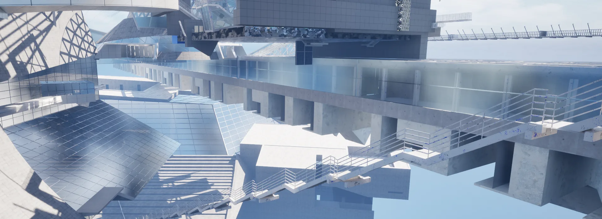
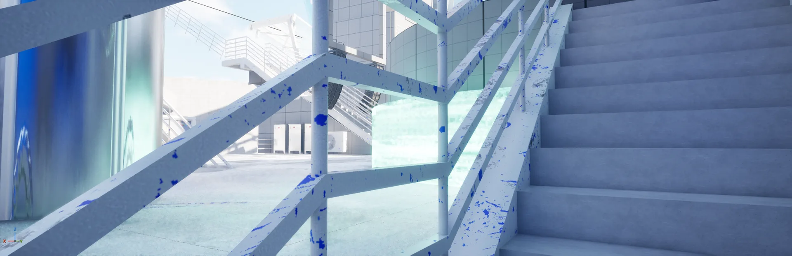
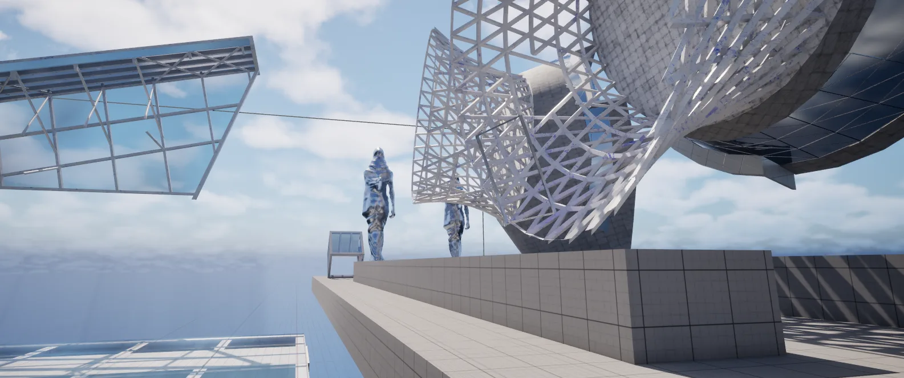

01Context
Two tools, one space
- Project
- Personal case study
- Engines and tools
- Unreal Engine 5, TouchDesigner
- Genre
- Point and click puzzle adventure, concept
- My role
- Concept, level design, materials
- Year
- 2026
Guide with visuals
Generated materials lead the eye along the route.
Keep it readable
Light, glass and patterns separate the path from a white background.
02The build
Platforms, glass and a spiral ramp
- Geometry Existing assets, so the time goes to layout and flow
- Materials Made in TouchDesigner, imported into Unreal Engine
- Layout A map with named areas before any asset





03What I learned
What I learned
- Not a prototyping tool TouchDesigner is strong for materials, but play, collision and logic stay in Unreal
- Generated visuals can guide A glowing pattern pulls the eye as well as a light does